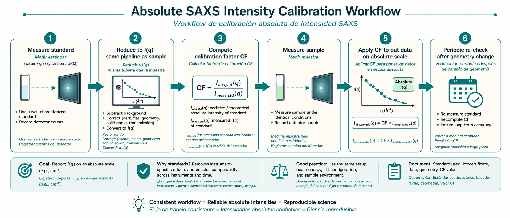
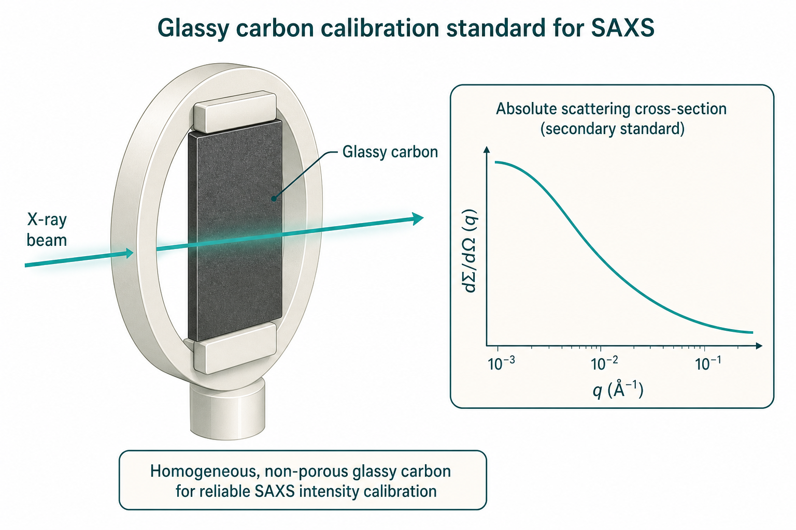

绝对标定（Absolute calibration）
Placing $I(q)$ on the differential scattering cross-section scale
本导读综合 Dreiss 等（2006）对台式 SAXS 标定方法的比较、Zhang 等（2010）对玻璃碳（glassy carbon）均匀性与稳定性的系统评估、Allen 等（2017）发布的 NIST SRM 3600 认证流程、Cookson 等（2006）对同步辐射针孔 SAXS 采集与归一化策略、Zeng 等（2017）对专用束线标定与分子量验证的实践，以及 Wignall & Bates（1987）对 SANS 绝对标定的经典框架。目标：理解为什么需要绝对标定、怎样用一级/二级标样把数据放到 $\mathrm{d}\Sigma/\mathrm{d}\Omega$（单位 $\mathrm{cm}^{-1}$，常写作 $\mathrm{cm}^{-1}\,\mathrm{sr}^{-1}$ 视归一化约定而定）尺度，以及实验室与束线日常中最易踩的坑。
绝对标定不是还原链末端的「锦上添花」，而是把散射强度与材料本征性质挂钩的定量关口。未标定数据仍可做 Guinier 斜率、条纹位置等几何分析，但无法可靠回答：粒子数密度多少、体积分数多少、比表面积多少、与 SANS 或其他台站数据能否直接拼接、模型拟合中的振幅参数是否物理。工业与医药实验室长期停留在任意单位，正是 Allen 2017 推动 SRM 3600 的动因；生物 SAXS 发表规范（Trewhella 2017）则明确要求 $\mathrm{cm}^{-1}$ 尺度以便 $M$ 交叉验证。
问题是什么
小角散射测得的是探测器上的计数率或归一化强度 $I(q)$。若不做绝对标定，曲线往往只有任意单位：换仪器、换光强、换样品厚度或测量时间，数值就无法直接比较。绝对标定的任务，是把 $I(q)$ 与样品的微分散射截面 $\mathrm{d}\Sigma/\mathrm{d}\Omega$ 联系起来——它由材料的本征散射长度密度差与纳米结构决定，与几何因子无关地承载「材料有多能散射」的定量信息。
从还原链视角（Pauw 2013），绝对标定对应校正代号 AU：此前 TR、FL、TI、TH、BG 等步骤须已完成且可追溯。Zeng 2017 把强度分为三档——原始计数、归一化强度、绝对截面——只有最后一档才支持分子量、数密度、比表面积等推论。跳过 AU 并不等于「不能做科学」，但任何涉及 $I(0)$ 绝对值、Porod 不变量、与理论截面比对的结论都失去定量基础。
绝对标定一旦成立，你可以：
- 从前向散射 $I(0)$ 估计粒子数密度、体积分数、比表面积；
- 把 SAXS 与 SANS、不同 $q$ 区仪器上的数据拼接；
- 用已知形式因子或Porod 定律约束模型参数，而不是任意缩放；
- 发现多重散射、异常聚集或背景扣除错误（未标定数据常把这些问题藏起来）。
实验室台式 SAXS 尤其容易长期停留在任意单位：初级标样（纯水等）信号弱、测量慢，而用户又误以为 Guinier 拟合不需要绝对强度。事实上，Guinier 分析虽可在相对强度上做，但分子量、孔隙率、界面面积等定量解释离不开绝对尺度（Zhang 2010；Allen 2017）。同步辐射束线上，Cookson 2006 指出：探测器动态范围、$I_0$/$I_t$ 监测与能量扫描时的归一化漂移，往往比「有没有标样」更早限制定量质量——标定须嵌入整套采集策略，而非事后补一步。
SANS 社区因 Wignall & Bates（1987）及 Oak Ridge 等中心的预标定二级标样传统，绝对标定普及度高于 SAXS；但轻水作一级标样时的非弹性散射、钒标样的多重散射等，在 SANS 中有独立陷阱。X 射线与中子标定在物理量上一致（$\mathrm{d}\Sigma/\mathrm{d}\Omega$，$\mathrm{cm}^{-1}$），但探测器响应、背景来源与标样选择不同，不可照搬公式而忽略单位与几何约定。
核心文献主线
Dreiss 2006：台式仪器上多种标样的并排比较
Dreiss 等在 Bruker NanoStar 类针孔台式 SAXS 上，用同一套几何设置比较了：
- 纯液体（一级标样）：水及多种有机溶剂的相干散射由等温压缩率 $\chi_T$ 决定，$\mathrm{d}\Sigma/\mathrm{d}\Omega$ 可理论计算；但台式源上统计差，单次标定可需数十小时测量。
- 玻璃碳（二级标样）：先用 SANS 测定其绝对截面，再用于 SAXS；信号强、测量快，适合日常复标，但首次仍需与一级方法锚定。
- 单分散硅胶溶胶：界面清晰时可用 Porod 区求截面；长期稳定性存疑。
多种溶剂得到的标定因子 CF 在约 $\pm 5\%$ 内一致，说明方法可靠；作者建议日常用玻璃碳快速复标，而初次或争议时用液体做一级校验。
数值直觉：台式 NanoStar 上纯水标定单次可需 20–40 h（密封管 X 射线源）；玻璃碳二级标定约 10–30 min。因此 Dreiss 工作流的经济最优策略是：立项时用液体或硅胶溶胶锚定 CF，运行中用固定批次玻璃碳复标；争议时液体再测一次。旋转阳极源上纯水信号可达实用水平（Pedersen 2004），但暗电流与空池背景仍须与信号同量级对待。CF 还耦合探测器增益与软件归一约定——换计算机或升级软件后应复测 GC。

Zhang 2010：玻璃碳能否当「通用」二级标样？
Zhang 等利用 APS USAXS 的一级标定能力（光电二极管线性动态范围覆盖主束与弱散射），把 pinhole SAXS 与 USAXS、SANS 数据在玻璃碳上交叉验证。主线结论：
- 散射来自碳基体中的微孔，结构在 $q > 0.01\,\mathrm{\AA}^{-1}$ 区空间均匀性优于约 2%；
- 同批次片材片间差异约 $\pm 2.5\%$，不同生产批次可差 $>10\%$——标样必须固定批次并记录证书；
- 常规束流照射下强度稳定，适合作为 pinhole / USAXS 之间的桥梁。
- 低 $q$ 区受狭缝 smear 影响，与 pinhole 比较前须 desmear 或 smeared 模型；
- 与 SANS 测定的 GC 截面在重叠 $Q$ 区一致，支撑 SAXS 二级标准地位。

玻璃碳标样概念图" width="900">Allen 2017：NIST SRM 3600 认证
在 Zhang 等工作基础上，NIST 发布 SRM 3600：以 USAXS 一级法认证玻璃碳小片的 $\mathrm{d}\Sigma/\mathrm{d}\Omega(Q)$ 曲线（认证 $Q$ 范围约 $0.008$–$0.25\,\mathrm{\AA}^{-1}$），附带不确定度。用户只需在相同仪器配置下测标样与样品，比较认证曲线即可得到模型无关的标定因子，无需对标样曲线做 Guinier 拟合。SRM 旨在解决工业/医药实验室 SAXS「根本没有强度标定」的普遍问题（Allen 2017）。
使用要点：认证证书给出特定 $Q$ 点的截面值与扩展不确定度；pinhole SAXS 须在重叠 $Q$ 区内取 CF，勿外推至认证范围之外。SRM 片材应平放、避免划伤与污染；与样品测量保持相同池型、光路真空段与探测器位置。若台站 $q_{\min} > 0.01\,\mathrm{\AA}^{-1}$，仍可用玻璃碳中高 $q$ 区标定，但须用 Zhang 2010 验证的低 $q$ 行为或与液体一级法交叉核对。
Cookson 2006：同步辐射针孔 SAXS 的采集与归一化策略
Cookson 等以 APS ChemMatCARS 15-ID 针孔 SAXS/WAXS 为例，强调标定是采集策略的一部分，而非单独实验日的工作：
- $q$ 刻度与束心： 飞行管后端内置介孔二氧化硅标准，产生各向同性衍射环，软件自动拟合束心与样品–探测器距离 $L$；改 $L$ 后 15 min 内可恢复运行，但须重跑标定序列。
- 动态范围： CCD 读出噪声使短曝光高 $q$ 不可靠，长曝光低 $q$ 饱和；多曝光时间叠加或单图分区积分（masking）拼接 $I(q)$，弱标样（纯水）尤须如此。
- $I_0$ 与透射： 样品前用 mica 箔 Laue 散射监测 $I_0$（低寄生散射）；透射用大面积下游探测器，比束阻处小面积二极管更抗束漂。变能量时 $I_0$/$I_t$ 灵敏度关系可能变——须用内置二氧化硅环强度作二级强度归一化曲线。
- 绝对截面： 归一化 profile 再用水（Orthaber 等）或玻璃碳（Russell 等）二级标样换到 $\mathrm{d}\Sigma/\mathrm{d}\Omega$；与 Dreiss 2006 结论一致。
对用户的启示：同步辐射上「测得漂亮 2D 图」不等于「定量 $I(q)$」；曝光策略、透射监测与能量扫描归一化与标样测量同等重要。
Zeng 2017：束线标定流程与分子量作为 QC
SSRF BL16B1 工作把散射强度分为原始计数 → 归一化强度 → 绝对截面三阶段，明确只有末级才支持分子量、散射体数密度、比表面积等定量（Zeng 2017）。标定程序：
- 一级： 玻璃碳（与 Zhang / SRM 路线一致）锚定绝对尺度；
- 二级： 纯水验证；分钟级完成，不同 $L$、波长下重复性良好；
- 应用： 用 $M = I(0) N_A / [C(\Delta\rho_M)^2]$ 测标准蛋白，与已知 $M$ 偏差 $<10\%$ 作为束线性能与样品 QC。
该文的价值在于把「标定」从偶发标定日变成可重复的台站规程，并示范如何用分子量反查数据质量——若 $M$ 系统性偏高，优先查浓度、背景与 CF，而非强行调 $D_{\max}$ 或 Guinier 区间。
Wignall & Bates 1987：SANS 绝对标定的经典框架
Wignall & Bates 系统讨论 SANS 绝对标定的方法、不确定度与标样陷阱，核心公式（探测器元面积 $\Delta a$，效率 $\varepsilon$，样品厚度 $t$，透射 $T$）：
$$\frac{\mathrm{d}\Sigma}{\mathrm{d}\Omega}=\frac{I(Q)}{t\,T}\,\frac{r^{2}}{\varepsilon\,I_{0}\,\Delta a\,A}.$$
文献主线包括四类一级/二级途径：
- 直测 $I_0$ 与 $\varepsilon$： $^3$He 计数器；需衰减器避免探测器饱和；
- 钒（V）： 非相干、近似 $Q$ 无关；须校正多重散射（厚样 $\sim 8\%$）；
- 轻水（$H_2O$）： 信号强但非弹性散射显著（$g \approx 1.37$ @ 4.75 Å），截面非严格强度量；$>30\%$ 多重散射；
- 预标定二级标样： 聚乙烯、单分散氘代聚合物等；Oak Ridge 政策是用户 $<30$ min 完成标定，各 $Q$ 几何配套标准，避免测样与标定间重调仪器。
绝对标定在 SANS 中的「诊断」角色：氘标记共混物超额散射、嵌段共聚物同位素效应、胶束模型参数约束、Porod 比表面积——均依赖 $\mathrm{d}\Sigma/\mathrm{d}\Omega$ 而非任意计数。Wignall 强调多方法交叉一致约 $\pm 5\%$；偏差更大应查标样而非样品模型。
SANS 水标定细节：轻水非弹性使表观截面依赖厚度与 $\lambda$；Jacrot 给出 inelasticity 因子 $g(\lambda)$，$g \approx 1.37$ @ 4.75 Å。勿把 SAXS 纯水公式直接用于 SANS。钒标样多重散射可用厚度外推 $t\to 0$ 减小（Hayashi 等）。
关键公式与结论
绝对强度的定义（Dreiss 记号）
样品散射强度可写为
$$I_S(q)=\frac{N_S(q)}{t_S}=I_0(\lambda)\,A\,\Delta\Omega\,\eta(\lambda)\,T_S(\lambda)\,d_S\left(\frac{\partial\Sigma}{\partial\Omega}\right)_S(q)+\mathrm{BG}_S,$$
其中 $q = 4\pi\sin(\theta/2)/\lambda$，$\theta$ 为散射角；$I_0$ 为入射通量，$A$ 光照面积，$\Delta\Omega$ 探测器立体角元，$\eta$ 效率，$T_S$ 透射，$d_S$ 厚度，BG 为背景。实验目标是求 $\mathrm{d}\Sigma/\mathrm{d}\Omega$（$\mathrm{cm}^{-1}$）。
一级标定：衰减主束与光电二极管（USAXS / 同步辐射）
Zhang 2010 与 Allen 2017 的「一级」能力来自 APS USAXS：光电二极管线性动态范围覆盖主束与弱散射，按式直接得 $\mathrm{d}\Sigma/\mathrm{d}\Omega$，无需已知标样物性。pinhole SAXS 用户通常无此硬件，但原理上直测 $I_0$ 与探测器效率仍是一级路线（Wignall 1987 在 SANS 中用 $^3$He 计数器）。关键要求：衰减器自身须波长标定；探测器在线性区；几何因子 $A$、$\Delta\Omega$、$\eta$ 独立测定或交叉验证。
二级标定比值公式
用已知截面的标样（st）标定未知样品（s），几何因子相消：
$$\left(\frac{\partial\Sigma}{\partial\Omega}\right)_s(q)=\left(\frac{\partial\Sigma}{\partial\Omega}\right)_{st}(q)\,\frac{[I_s(q)-\mathrm{BG}_s]\,d_{st}T_{st}}{[I_{st}(q)-\mathrm{BG}_{st}]\,d_s T_s}.$$
标定因子 $\mathrm{CF} = (\mathrm{d}\Sigma/\mathrm{d}\Omega)_{st}\cdot d_{st}T_{st}/[I_{st}-\mathrm{BG}_{st}]$；校正后的样品强度乘以 CF 即得绝对单位（Dreiss 2006）。
纯水一级标样（生物/稀溶液常用）
纯液体在 $q\to 0$ 的相干截面由涨落理论给出：
$$\left(\frac{\partial\Sigma}{\partial\Omega}\right)_{H_2O}(0)=\rho n_e^2 b_e^2 (\rho k T)\chi_T,$$
293 K、$10^5$ Pa 下水 $\chi_T \approx 4.591\times 10^{-10}\,\mathrm{Pa}^{-1}$，得 $(\mathrm{d}\Sigma/\mathrm{d}\Omega)_{H_2O}(0)\approx 1.65\times 10^{-2}\,\mathrm{cm}^{-1}$（Dreiss 2006）。SANS 中水作二级标样很常见；SAXS 上信号弱，但在高流强旋转阳极 + 优化光路后已可行（Pedersen 2004，见 Dreiss 引文）。
USAXS 一级法与 SRM 3600
APS USAXS 用光电二极管同时测 $I_0(0)$ 与 $I_S(Q)$，直接按定义归一（Allen 2017）：
$$\frac{\mathrm{d}\Sigma'}{\mathrm{d}\Omega}=\frac{I_S(Q)}{I_0(0)}\frac{1}{T_S\,\tau_S\,\Delta\Omega},$$
$\tau_S$ 为样品厚度。此法无需衰减片即可跨越多个数量级的强度动态范围，因而能「认证」玻璃碳的绝对曲线供其他 pinhole SAXS 作二级标定。
生物样品分子量（绝对尺度 QC）
稀溶液、单分散、已知 $\Delta\rho_M$ 时（Zeng 2017；Trewhella 2017）：
$$M=\frac{I(0)\,N_A}{C\,(\Delta\rho_M)^2},$$
$C$ 为质量浓度（g/cm$^3$），$I(0)$ 为绝对单位 前向散射。与序列/组成预测 $M$、Porod 体积/$M$、$p(r)$ 积分比对的三法互证是标定是否可信的最快检验。相对强度法依赖 BSA 等标准蛋白比值，辐射损伤与聚集使 $I(0)/c$ 漂移，不可替代绝对标定。
Porod 不变量与界面（绝对尺度）
两相体系高 $q$ 区 Porod 定律：$I(q) \to K_p/q^4$，Porod 不变量 $Q_P = \int_0^\infty q^2 I(q)\,\mathrm{d}q$ 与比表面积 $S/V$、体积分数 $\phi$ 相关（Wignall 1987）。绝对 $K_p$ 可约束孔洞数密度、乳胶核壳参数等——相对单位下 $K_p$ 无物理意义。
SAXS 与 SANS 标定对照
| 维度 | SAXS（Dreiss / Zhang / Allen） | SANS（Wignall & Bates） |
|---|---|---|
| 目标量 | $\mathrm{d}\Sigma/\mathrm{d}\Omega$，$\mathrm{cm}^{-1}$ | 同左；与 Rayleigh 比类比 |
| 常用一级标样 | 纯水（弱信号）、主束衰减直测 | 钒、轻水（强但非弹性复杂） |
| 常用二级标样 | 玻璃碳 SRM 3600 | 预标定 PE、氘代聚合物、玻璃碳（Russell 等） |
| 典型不确定度 | 二级 2–5%（同批次 GC）；一级 5–10% | 多法交叉 $\pm 5\%$ |
| 特殊陷阱 | 批次差异、低 $q$ 狭缝 smear | $H_2O$ 非弹性、V 多重散射、波长依赖 $\sigma$ |
| 生物 QC | $M$ 与 $I(0)/c$（绝对） | 同左；对比匹配溶剂 |
方法选择小结
| 方法 | 类型 | 典型不确定度 | 测量时间（台式 SAXS） | 优点 | 局限 / 适用条件 |
|---|---|---|---|---|---|
| 衰减主束直测 | 一级 | 5–10% | 数小时（含衰减器标定） | 不依赖标样物性 | 衰减器波长依赖、探测器线性范围；需同步辐射或高动态范围探测器 |
| 纯水 / 纯溶剂 | 一级 | 5–8% | 20–40 h（密封管）；2–5 h（旋转阳极） | 理论截面已知，可溯源 | SAXS 信号极弱；暗电流与空池背景须精确扣除 |
| 玻璃碳（SRM 3600） | 二级（认证） | 2–5%（同批次） | 10–30 min | 信号强、稳定、可采购 | 须匹配认证 $Q$ 区（0.008–0.25 Å$^{-1}$）；批次差异 $>10\%$ 可能 |
| 玻璃碳（自标定） | 二级 | 5–10% | 10–30 min | 日常快速复标 | 首次须与一级方法锚定；不同来源玻璃碳不可互换 |
| 单分散胶体 + Porod | 一级/二级 | 5–15% | 1–3 h | 界面清晰时 Porod 区截面准 | 长期稳定性存疑；聚集风险；多分散洗平 Porod 尾 |
| 标准蛋白（BSA 等） | 流程检查 | 10–20% | 30 min | 验证还原流程 | 不可替代绝对标定；辐射损伤与聚集导致 $I(0)$ 漂移 |
- 前置条件： $q$ 刻度已用银二十二酸或光栅标定；背景（空池/暗电流）已扣除；透射率 $T$ 与厚度 $d$ 已独立测量。
- 选标样： 首次标定 → 纯水（一级）或 SRM 3600（认证二级）；日常复标 → 固定批次玻璃碳；争议/跨台站比较 → 液体 + 玻璃碳双验证。
- 测量标样： 与样品相同几何（相机长度、针孔、光强、探测器位置）；曝光使标样 $I(q)$ 在认证 $Q$ 区统计误差 $< 2\%$。
- 计算 CF： $\mathrm{CF} = (\mathrm{d}\Sigma/\mathrm{d}\Omega)_{st} \cdot d_{st} T_{st} / [I_{st}(q) - \mathrm{BG}_{st}]$；在 $q > 0.01$ Å$^{-1}$ 区取平均或加权拟合。
- 应用至样品： $(\mathrm{d}\Sigma/\mathrm{d}\Omega)_s = \mathrm{CF} \cdot [I_s - \mathrm{BG}_s] / (d_s T_s)$；检查 $I(0)$ 与化学 $M$ 是否自洽（生物样品 $\pm 10\%$）。
- 记录与复标触发： 记录标样批次号、测量日期、CF 值与不确定度；以下任一改变须复标：相机长度、针孔、光强、探测器位置、波长。
实践要点与坑
| 现象 | 可能原因 | 优先检查 |
|---|---|---|
| $M$ 系统性偏高 20%+ | CF 过大、浓度偏高、背景欠扣 | 重测 blank；独立称量 $C$；玻璃碳 CF 复测 |
| 不同 $q$ 区 CF 不一致 | smearing、探测器非线性、$q$ 刻度错 | desmear 或 smeared 比较；多曝光拼接；银二十二酸 $q$ 标定 |
| 与 SANS 拼接台阶 $>10\%$ | 单位约定、$\Delta\rho$、溶剂衬度 | 确认 $\mathrm{cm}^{-1}$ vs $\mathrm{cm}^{-1}\,\mathrm{sr}^{-1}$；对比匹配点 |
| 玻璃碳 CF 逐日漂移 | 光强、针孔、探测器位 | 每次改几何后首测 GC；查 $I_0$ 监测 |
| 纯水标定 CF 发散 | 统计不足、暗电流、空池 | 延长曝光/多曝光拼接；密封毛细管同一位置测 blank |
- 背景与空池 → 如何判断： 液体标定必须正确扣除毛细管/空池散射与暗电流；Dreiss 指出暗电流与纯水信号可比，不可忽略。若 blank 扣除后低 $q$ 仍抬高，检查空池是否在相同样品位置测量。
- 透射率 → 如何判断： 样品与标样的 $T$、厚度 $d$ 必须独立测量；间接透射法（用玻璃碳发散主束）在台式机上常用。$T$ 误差 5% 直接转化为强度误差 5%。
- 几何改变即复标 → 如何判断： 相机长度、针孔、光强、探测器位置任一改变，CF 即变；用玻璃碳做快速复标（Dreiss 2006）。换配置后首测标样，CF 变化 $>3\%$ 须调查。
- 玻璃碳批次与 $Q$ 区 → 如何判断： 不同批次截面可差 $>10\%$；标定拟合用 $q>0.01$ Å$^{-1}$ 较稳（Zhang 2010）。SRM 3600 给出认证值与 95% 置信带，勿随意换批次。
- 狭缝与 desmearing → 如何判断： USAXS 数据常狭缝 smear；与 pinhole 比较前需 Lake 等算法 desmear，或比较 smeared 模型（Zhang 2010）。未 desmear 时低 $q$ 抬高、$I(0)$ 偏大。
- 单位与 $I(0)$ 分子量 → 如何判断： 生物 SAXS 发表规范要求 $\mathrm{cm}^{-1}$ 绝对尺度，以便用 $M = I(0) N_A / [C(\Delta\rho_M)^2]$ 验证样品（Trewhella 2017）；相对单位无法做此检验。$M$ 偏差 $>15\%$ 提示标定或浓度问题。
- 不要只靠「标准蛋白」→ 如何判断： BSA、溶菌酶等易辐射损伤或聚集，仅宜作流程检查，不宜替代绝对标定（Trewhella 2017）。标准蛋白 $I(0)/c$ 随曝光漂移 $>5\%$ 即失效。
- 浓度与 $I(0)$ 线性 → 如何判断： 绝对标定后，稀释系列 $I(0)/c$ 应恒定（$\pm 5\%$）；非线性提示聚集、$S(q)$ 或浓度测定错误（Zeng 2017）。
- 能量扫描 / ASAXS → 如何判断： 变 $\lambda$ 后 $I_0$/$I_t$ 线性关系可能变（Cookson 2006）；须用二级环状标样或 GC 在每个能量点复标，勿假设 CF 能量无关。
- SANS 水标样 → 如何判断： 轻水非弹性使表观截面依赖厚度与 $\lambda$（Wignall 1987）；勿把 SAXS 纯水公式直接用于 SANS 而不查 $g(\lambda)$ 与多重散射校正。
- 记录与溯源 → 如何判断： 发表须报告标样类型、批次、CF 值、不确定度、是否 SRM 3600 证书值；SASBDB 等库要求绝对尺度 $I(q)$（Trewhella 2017）。
场景化标定策略
| 场景 | 推荐路径 | 预期不确定度 |
|---|---|---|
| 台式 SAXS 首次验收 | 纯水（一级）+ 玻璃碳（二级）双验证 | 5–8% |
| 台式日常复标 | 固定批次玻璃碳；几何不变则每周/每月 | 2–5% |
| 同步辐射 pinhole | SRM 3600 或束线二级 GC；多曝光拼接弱标样 | 2–5% |
| 生物发表 $M$ | 绝对 AU + $M$ 三法互证 | $M$ 目标 $\pm 10\%$ |
| SANS 用户束时 | 预标定二级标样 $<30$ min（Wignall 1987） | $\pm 5\%$ |
| USAXS–SAXS 拼接 | USAXS 一级认证 GC；pinhole 二级；desmear 一致 | 视 $Q$ overlap |
相关词条
散射矢量 $q$、 散射长度密度、 前向散射、 Porod 定律、 Guinier 分析、 衬度、 绝对强度
相关学习章
- 04 数据还原 — 背景、透射、2D→$I(q)$ 是标定前置步骤
- 05 绝对标定 — 学习路径中的系统讲解
- 03 仪器与几何 — 针孔/狭缝与 $q$ 刻度
- 专题：数据还原 — 标定前的 $q$、背景、透射校正
- 专题：IFT — 绝对 $I(0)$ 与 $p(r)$ 积分
- 06 Guinier / Porod — 绝对尺度上的 $I(0)$ 与界面分析
文献列表
- On the absolute calibration of bench-top small-angle X-ray scattering instruments: a comparison of different standard methods. Cécile A. Dreiss, Kevin S. Jack, Andrew P. Parker (2006). DOI: 10.1107/S0021889805033091
- Glassy Carbon as an Absolute Intensity Calibration Standard for Small-Angle Scattering. Fan Zhang et al. (2010). DOI: 10.1007/s11661-009-9950-x
- NIST Standard Reference Material 3600: Absolute Intensity Calibration Standard for Small-Angle X-ray Scattering. Andrew J. Allen et al. (2017). DOI: 10.1107/S1600576717001972
- Strategies for data collection and calibration with a pinhole-geometry SAXS instrument on a synchrotron beamline. David Cookson et al. (2006). DOI: 10.1107/S0909049506030184
- Performance on absolute scattering intensity calibration and protein molecular weight determination at BL16B1, a dedicated SAXS beamline at SSRF. Jianrong Zeng et al. (2017). DOI: 10.1107/S1600577516019135
- Absolute Calibration of Small-Angle Neutron Scattering Data. G. D. Wignall, F. S. Bates (1987). DOI: 10.1107/S0021889887087181